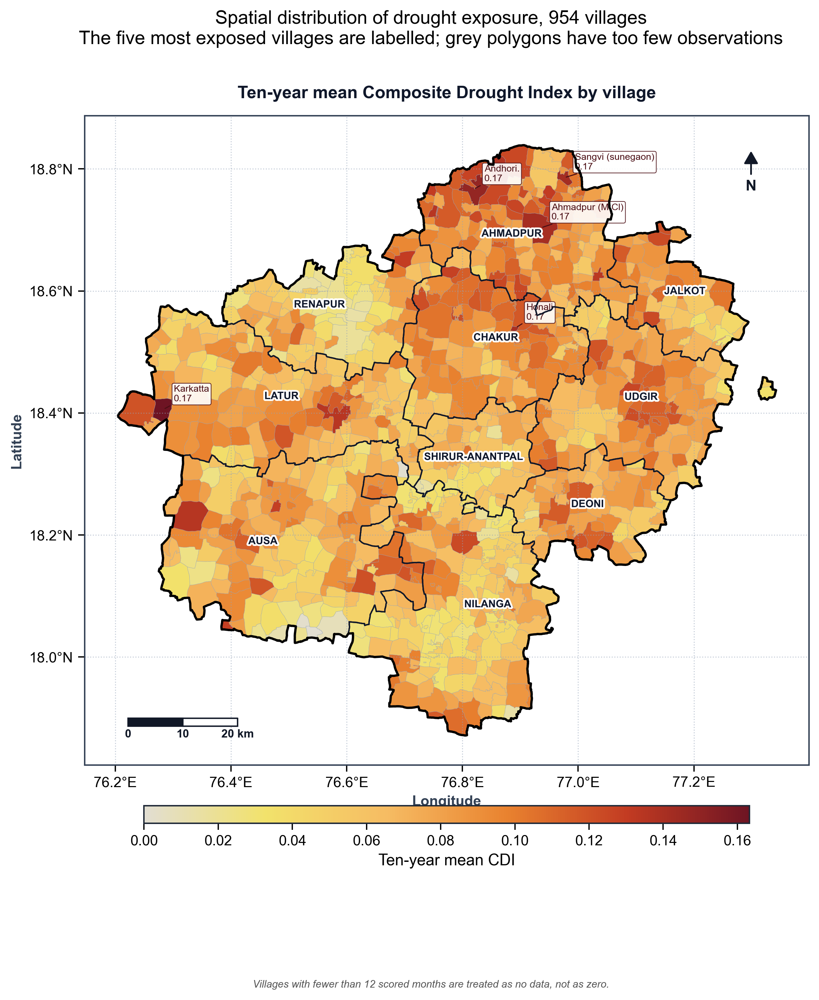
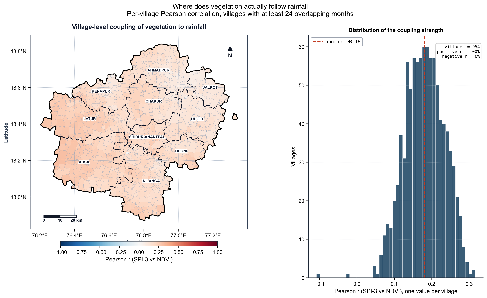
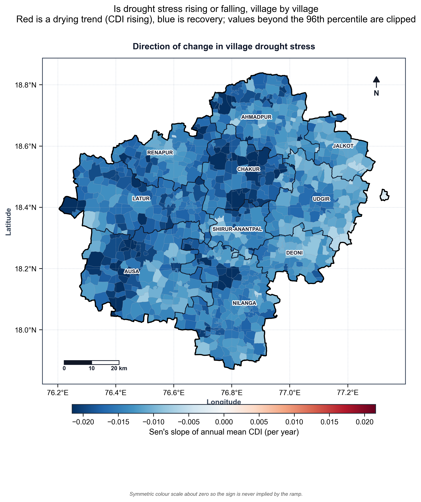
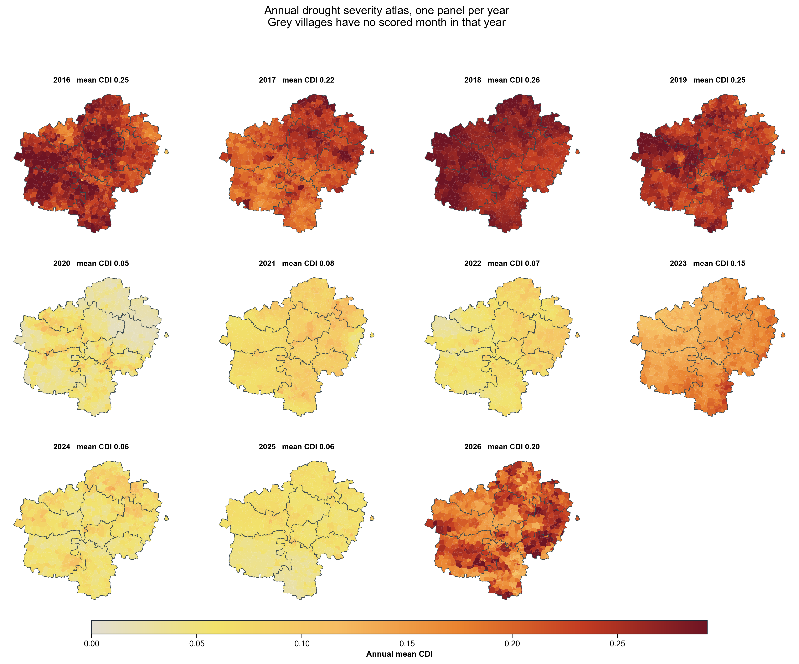
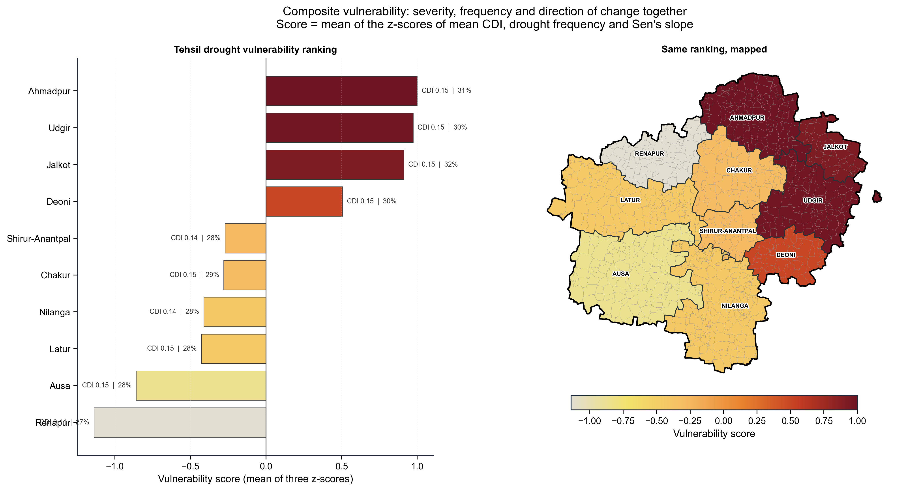

Drought monitoring - scientific visualization suite
Study area Latur · period 2016-01 to 2026-10 (2016-2026) · 954 villages · 10 tehsils · 124,020 village-months · 53 figures · generated 2026-11-01T11:09:30
01_image_availability - Image availability and sampling completeness
Sentinel-2, Sentinel-1 and CHIRPS coverage (%) for every tehsil and year.01_image_availability/a1_tehsil_year_availability.pngMonth x year availability grid for all three sources; grey cells are months with no observation at all.01_image_availability/a2_month_year_availability.pngTehsil-level coverage bars for each source, plus the district-wide figure with the min-max tehsil range.01_image_availability/a3_tehsil_availability_ranking.pngPer-year count of months present and the spatial coverage of each source within those months.01_image_availability/a4_annual_availability_trend.pngDistribution of available CDI components per village-month and the drought class reached at each level.01_image_availability/a5_component_completeness.png
02_correlation - Inter-index correlation structure (Pearson and Spearman)
Pearson correlation matrix for all eleven indices over the full study period.02_correlation/c1_pearson_matrix.pngSpearman rank correlation matrix for the same eleven indices.02_correlation/c2_spearman_matrix.pngPer-pair comparison of Pearson and Spearman coefficients and their signed difference matrix.02_correlation/c3_pearson_vs_spearman_agreement.pngSignificance stars over -log10(p) for Pearson and Spearman correlation.02_correlation/c4_significance_matrices.pngYear-by-year Pearson correlation grid for the six core indices.02_correlation/c5_annual_pearson_grid.pngYear-by-year Spearman correlation grid for the six core indices.02_correlation/c6_annual_spearman_grid.pngWet-season and dry-season correlation matrices, computed with both Pearson and Spearman.02_correlation/c7_seasonal_pearson_spearman.pngPer-tehsil Pearson correlation for fourteen index pairs.02_correlation/c8_tehsil_pearson_heatmap.pngPer-tehsil Spearman correlation for the same fourteen index pairs.02_correlation/c9_tehsil_spearman_heatmap.pngForest plot of the headline index correlations with 95% confidence intervals, Pearson and Spearman.02_correlation/c10_key_correlation_forest.png
03_heatmaps - Full heatmap atlas of every index over time and space
Month x year mean of every index in the registry, one panel per index.03_heatmaps/h1_index_heatmap_atlas_month_year.pngTehsil x year mean of every index in the registry, rows ranked by ten-year mean.03_heatmaps/h2_index_heatmap_atlas_tehsil_year.pngClustered village x year matrix of annual mean CDI, revealing drought-exposure archetypes.03_heatmaps/h3_village_year_clustermap.pngDrought-occurrence frequency by tehsil x year and by month x year.03_heatmaps/h4_drought_frequency_heatmaps.pngPercentage of scored village-months in each drought class, year by year.03_heatmaps/h5_class_share_by_year.png
04_index_relationships - Index relationships, regressions and response lags
Four core scatter regressions with OLS fit, 95% confidence band and full diagnostics.04_index_relationships/r1_core_scatter_regressions.pngSeaborn pairplot of the five core indices coloured by drought class, with KDE margins.04_index_relationships/r2_pairplot_matrix.pngHexbin density plots of the two central couplings with both correlation coefficients.04_index_relationships/r3_hexbin_density.pngPer-tehsil SPI-3 vs NDVI scatter regressions with r and n annotated.04_index_relationships/r4_regression_by_tehsil.pngPooled lagged correlations of SPI-1/3/6 against NDVI, VCI and NSMI for lags of zero to six months.04_index_relationships/r5_response_lag.pngNDVI/EVI agreement, VCI/VHI agreement and the NDVI-EVI residual distribution.04_index_relationships/r6_index_agreement.png
05_distributions - Index distributions and drought-class separation
Histogram plus KDE for every index, with mean, median, n and skewness.05_distributions/d1_index_distributions.pngMonthly boxplots for rainfall, NDVI, NSMI and CDI showing the seasonal cycle and its spread.05_distributions/d2_monthly_climatology.pngViolin plots of each index by drought class with Kruskal-Wallis tests, plus class frequencies.05_distributions/d3_class_separation.pngRanked village mean CDI with per-village p10-p90 band, plus the fourteen most exposed villages.05_distributions/d4_village_variability.pngDistribution of each component's contribution to the CDI and its presence across village-months.05_distributions/d5_component_contributions.pngDistribution of CDI against all other indices: raw density, standardised overlay and ECDF.05_distributions/per_index/d6_distribution_CDI.pngDistribution of NDVI against all other indices: raw density, standardised overlay and ECDF.05_distributions/per_index/d6_distribution_NDVI.pngDistribution of Rain against all other indices: raw density, standardised overlay and ECDF.05_distributions/per_index/d6_distribution_Rain.pngDistribution of SPI-1 against all other indices: raw density, standardised overlay and ECDF.05_distributions/per_index/d6_distribution_SPI-1.pngDistribution of SPI-3 against all other indices: raw density, standardised overlay and ECDF.05_distributions/per_index/d6_distribution_SPI-3.pngDistribution of SPI-6 against all other indices: raw density, standardised overlay and ECDF.05_distributions/per_index/d6_distribution_SPI-6.pngDistribution of SPI-12 against all other indices: raw density, standardised overlay and ECDF.05_distributions/per_index/d6_distribution_SPI-12.pngDistribution of EVI against all other indices: raw density, standardised overlay and ECDF.05_distributions/per_index/d6_distribution_EVI.pngDistribution of VCI against all other indices: raw density, standardised overlay and ECDF.05_distributions/per_index/d6_distribution_VCI.pngDistribution of VHI against all other indices: raw density, standardised overlay and ECDF.05_distributions/per_index/d6_distribution_VHI.pngDistribution of NSMI against all other indices: raw density, standardised overlay and ECDF.05_distributions/per_index/d6_distribution_NSMI.png
06_temporal_analysis - Temporal evolution and drought episodes
Month x year Hovmoller heatmaps of the CDI and SPI-3.06_temporal_analysis/t1_hovmoller_cdi_spi.pngAnnual series of CDI, drought share, SPI-3, SPI-12, rainfall and NDVI with Mann-Kendall and Sen's slope.06_temporal_analysis/t2_annual_series_trends.pngStacked area and stacked bars of the monthly and annual drought-class composition.06_temporal_analysis/t3_class_composition.pngMonthly share of villages in any drought and in severe-or-worse drought, with a 3-month running mean.06_temporal_analysis/t4_drought_extent.pngDistrict mean SPI-12 with SPI class bands and detected multi-month drought episodes.06_temporal_analysis/t5_spi12_episodes.pngSmall-multiple annual CDI series for every tehsil with Sen's slope and Mann-Kendall p-value.06_temporal_analysis/t6_tehsil_trends.png
07_spatial_analysis - Spatial pattern across villages and tehsils

Choropleth of ten-year mean CDI per village with the most exposed villages labelled.07_spatial_analysis/s1_village_mean_cdi.png

Village choropleth and histogram of the SPI-3 vs NDVI Pearson correlation.07_spatial_analysis/s2_village_spi_ndvi_correlation.png

Choropleth of Sen's slope of annual mean CDI per village.07_spatial_analysis/s3_village_trend.png

Small-multiple annual choropleths of mean village CDI.07_spatial_analysis/s4_annual_drought_atlas.png

Tehsil vulnerability ranking and its choropleth, built from mean CDI, drought frequency and trend.07_spatial_analysis/s5_tehsil_vulnerability_ranking.png